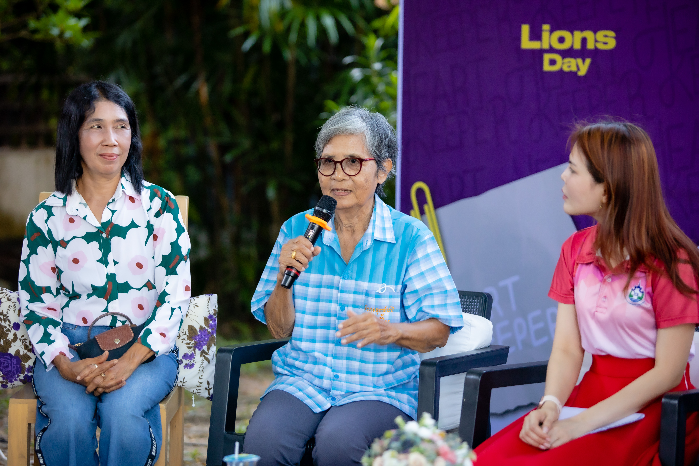

เพื่อนที่ใส่ใจ…สามารถเปลี่ยนชีวิตได้

คุณป้าศรีนิตย์ จิตอนงค์ ประธานสภาวัฒนธรรมตำบลบางกุ้ง เป็นแกนนำในการทำกิจกรรมผู้สูงอายุตำบลบางกุ้ง
วันหนึ่งได้สังเกตุ พบว่าสมาชิกในกลุ่มที่มาทำกิจกรรม มีพฤติกรรมบางอย่างที่แปลกไป และน่าจะมีความเสี่ยงทั้งสุขภาพกายและสุขภาพใจ
จึงมาบอกลูกสาวของสมาชิกท่านนั้น ทำให้คุณยาย ได้รับการรักษาได้ทันท่วงที และกลับมาแข็งแรงได้ตามปกติ
จากเหตุการณ์นี้ทำให้เรามั่นใจว่า ว่าการมี เพื่อนช่วยเพื่อน เป็น “แกนนำสุขภาพใจดี” คอยดูแล คอยส่งต่ออย่างทันท่วงทีนั้นสำคัญต่อผู้สูงอายุ
ที่มีภาวะเสี่ยงเป็นอย่างสูง